Step 1: Get into Barrel-Barrel. This can always be done in 6 or fewer slices. A basic method to do this step is to get all 8 edges next to each other, then do / U2 D4 /.
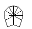 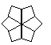 → 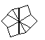
Step 2: Edge Checkering: The 4 edge pairs need to be all yellow-white or all white-yellow. Requires 12 algorithms (9 excluding mirrors). | Name | Image | Algorithm | Probability | Comments |
|---|---|---|---|---|
| Solved | 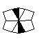 | N/A | 2.86% | 1 in 35 skip chance. |
| Left Feet | 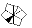 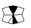 | / U' / U' / | 11.43% | |
| Right Feet | 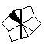 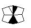 | / U / U / | 11.43% | Mirror of Left Feet. |
| Opp. Feet | 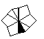 | / U5' / | 22.86% | The most common case. |
| Left Crowbar | 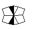 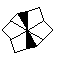 | / U / U' / | 5.71% | |
| Right Crowbar | 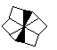 | / U' / U / | 5.71% | Mirror of Left Crowbar. |
| Matching Blocks | 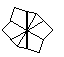  |
/ U' D' / | 2.86% | Can be performed from any angle. |
| Blocolumns |  |
/ U' / U5 D / | 11.43% | |
| Opp. Blocks | 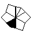 |
/ U' / U' D' / | 5.71% | Lateral slice into Matching Blocks. |
| Lock | |
/ U' / D5 / | 11.43% | Lateral slice into Opp. Feet. |
| Columns | 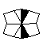 | / U / U' D' / | 5.71% | Central slice into Matching Blocks. |
| Antipode | 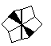 | / U D / U / U' D' / | 2.86% | Lateral slice into Columns. |
Step 3: Corner-Edge Pairs: All 8 edges need to be paired with their respective corner. The notation is different here: since 30-degree turns are impossible, a 60-degree turn is U/D.
- Create two "quads" made of of an edge pair with its two corresponding corners. One quad will be on each layer.
- Use a 3-cycle to get both of the remaining edges in the same location relative to the quad on each layer. Can be done intuitively, but easier to do with two algorithms: the 3-cycle (/ D' / U / U' / D) and the antipode (/ U' / U2' / U' / U' /).
- Place the U quad on D, and you will automatically be in Barrel-Barrel.
- Pair the remaining 4 edges on the top layer. Requires 13 algorithms (9 excluding mirrors and inverses).
| Case | Algorithm | Probability | Comments |
|---|---|---|---|
| Adj: 2 ⟷ 3 | / U / D' / U2' / U' / U2' / U2' / D U' / | 8.33% | Start off with / U / D' /. The next 4 face turns are just U2' U' U2' U2', and the / D U' / kind of undoes the / U / D' / at the beginning. |
| Opp: 2 ⟷ 6 | / D / U / U' / U' / D' U2' / U' / U2' / | 8.33% | Do / D / to start things off. Then we do 3 U-turns (U / U' / U' /) before undoing the initial D with a D'. Then U2' / U' / U2' / to finish it off. |
| Diag: 1 ⟷ 4 | / D U2' / U2 D' / U / D U2' / U2 D' / | 8.33% (12.5%) | Note the structure in the algorithm: We do some setup moves (/ D U2'), do a slice, undo the setup, and do U. Then repeat. If you have an X-perm (1 ⟷ 4; 2 ⟷ 5), use this algorithm to swap the two edge pairs. This happens with 4.17% probability. |
| A perm: 6 → 2 → 3 → 6 | / U2 D / U' / U / D' / U2' / | 8.33% | / U2 [mirrored & shifted 3-cycle] U2' / |
| A' perm: 6 → 3 → 2 → 6 | / U2' / D / U' / U / D' U2 / | 8.33% | / U2' [mirrored 3-cycle] U2 / |
| a perm: 1 → 2 → 4 → 1 | / U2 / D' / U / U' / D U2' / | 8.33% | / U2 [3-cycle] U2' / |
| a' perm: 1 → 4 → 2 → 1 | / U2 D' / U / U' / D / U2' / | 8.33% | / U2 [shifted 3-cycle] U2' / |
| O perm: 1 → 2 → 4 → 5 → 1 | / U / U / U' / D / U' / U / D' / | 4.17% | Alternates between slice and face turns. Pretty easy to memorize. |
| O' perm: 1 → 5 → 4 → 2 → 1 | / D / U' / U / D' / U / U' / U' / | 4.17% | Just the mirror of O perm. |
| W perm: 2 → 3 → 6 → 5 → 2 | / U2 / U2' / U' / U' / U2' / U / | 8.33% | 2-gen. |
| N perm: 1 → 4 → 6 → 3 → 1 | / U2 / U2' / U' / U2 / U / U' / U2' / | 8.33% | 2-gen. Same 3 starting face turns as W perm. |
| E perm: 1 ⟷ 2; 4 ⟷ 5 | / D' U' / U' / U D / D' / U D / | 4.17% | Alternates between two and one face turns in betwen each slice turn. Note the obvious structure in the algorithm. |
| H perm: 1 ⟷ 3; 4 ⟷ 6 | / D' U' / U2' / U D / U D' / U D / | 4.17% | Once you learn the E perm, the H perm is very easy to learn. |
Step 4: Square-0
The notation is different again: since only 90-degree turns are used, a 90-degree turn is U/D.
- Get back into cubeshape: / U D / does the trick. It's possible to learn all ~100-ish algs to solve all of step 4 with one alg, but these algs are not listed.
- PBL: Solve the whole thing! Requires 5 algorithms.
| Name | Algorithm | Probability | Comments |
|---|---|---|---|
| Solved | N/A | 2.78% | 1 in 36 skip chance. |
| N+N | / U D' / U' D / | 2.78% | Although this is arguably the best PBL, if you recognize that you'll get this case, do a U2 before going back into cubeshape to skip PBL. |
| J+J | / U' / U' D' / U' / | 44.44% | Put the solved bars in the back. |
| N+J | / U' / U / U' / U / | 22.22% | Put the solved bar in the bottom-left. |
| Pure J | / U / U' / U' D / U' / U / | 22.22% | Put the unsolved pieces in the top-right, like a normal J perm. |
| Pure N | / U' D' / U / U' D' / U / U' D' / | 5.56% | This is arguably the worst PBL, but it's easy to remember: ( / U' D' / U )x3. It can be avoided by doing a central slice before going back into cubeshape, and you'll get J+J instead. |